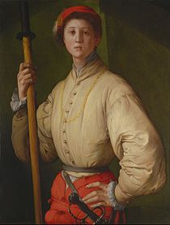

El davallament de la creu
Galeria
Formulari
Creador
Inici
Descripció
El davallament de la creu, conegut en italià com La Deposizione o Trasporto di Crist, és el quadre més conegut de l'artista italià Pontormo. Es tracta d'un oli que es troba a la capella Capponi de l'Església de Santa Felicita de Florència, Itàlia. Té unes dimensions de 3,13 metres d'alt per 1,92 m d'ample. Va trigar tres anys en acabar aquest oval trist i tumultuós de figures, des de 1525 fins a 1528. És una de les creacions del manierisme que marca les pautes per al futur. Es tracta d'un gran retaule per a la capella Capponi, dissenyada per Brunelleschi. Se situa en l'altar de la capella. Molts la consideren obra mestra de il Pontormo. La pintura plasma un moment que, tradicionalment, s'ha considerat que és el de la deposició de la creu, encara que no hi ha cap signe extern que ho evidencia: no hi ha referències al Gòlgota, ni apareix la creu. No pot ser un enterrament de Crist, ja que faltaria el sepulcre. Ni una Pietat, ja que no s'observa una relació immediata entre la Verge i Crist. Les figures tenen formes durament modelades i estan unides per una línia serpentinata. Destaca en Pontormo el colorit. És el manierista de colors més suaus, com el blau clar o el rosa pàl·lid, però els utilitza brillants, en contrast amb els altres: el rosa i el groc o groc ataronjat, el taronja i el verd, els violetes molt clars sobre un fons anyil. Un contrast particularment insòlit és el de la roba de Joan, que es troba damunt de la Verge: una túnica verda bronze destaca sobre una tela vermella entre vermellenc i taronja pàl·lid. Es nota la influència de Rosso Fiorentino en aquest colorit transparent i modulat.
Autor
Jacopo Carrucci (Pontormo, prop d'Empoli 24 de maig de 1494-Florència, 2 de gener de 1557), també conegut com Jacopo dóna Pontormo, Jacopo Contormo, o més comunament com Pontormo, va ser un pintor renaixentista italià.
Retrat de Jacopo

Zoom obra